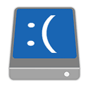
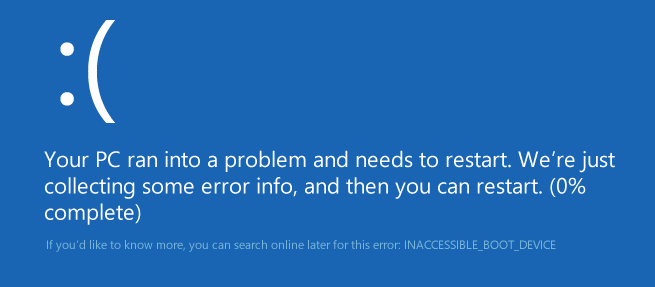
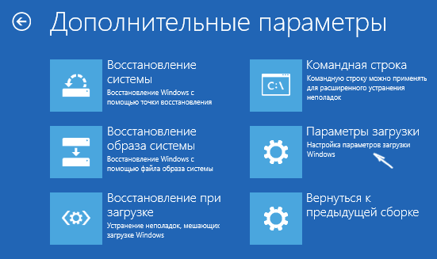
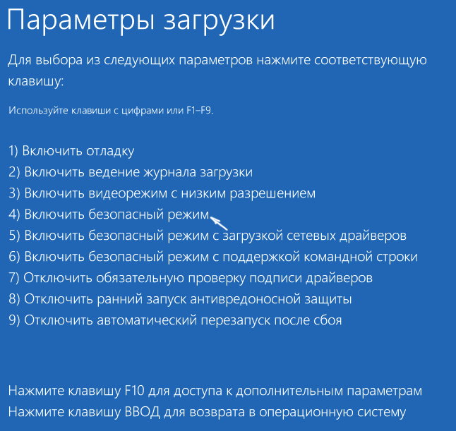
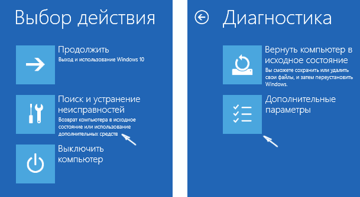
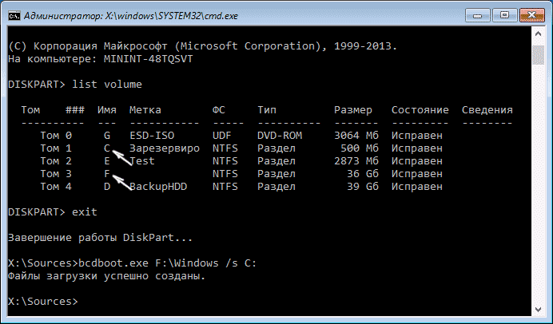

Ошибка INACCESSIBLE_BOOT_DEVICE в Windows 10 (СМ. НИЖЕ "МОЙ СЛУЧАЙ")
Это тоже может быть Вам интересно:
В этой инструкции пошагово о том, как исправить ошибку INACCESSIBLE_BOOT_DEVICE при загрузке Windows 10 в разных ситуациях — после сброса системы, обновления БИОС, подключения другого жесткого диска или SSD (или переносе ОС с одного на другой диск), изменения структуры разделов на диске и в других ситуациях. Есть очень похожая ошибка: синий экран с обозначением ошибки NTFS_FILE_SYSTEM, она может решаться теми же способами.
Начну с первого, что следует проверить и попробовать в этой ситуации, прежде чем пробовать исправить ошибку другими способами: отключите все дополнительные накопители (включая карты памяти и флешки) от компьютера, а также убедитесь, что ваш системный диск стоит первым в очереди загрузки в BIOS или UEFI (причем для UEFI это может быть даже не первый жесткий диск, а пункт Windows Boot Manager) и попробуйте перезагрузить компьютер. Дополнительная инструкция по проблемам загрузки новой ОС — Не запускается Windows 10.
Также, если вы что-то подключали, чистили или делали подобные действия внутри вашего ПК или ноутбука, обязательно проверьте все подключения жестких дисков и SSD к питанию и SATA интерфейсам, иногда также может помочь переподключение диска к другому SATA порту.
INACCESSIBLE_BOOT_DEVICE после сброса Windows 10 или установки обновлений
Один из сравнительно простых для исправления вариантов появления ошибки INACCESSIBLE_BOOT_DEVICE — после сброса Windows 10 в исходное состояние или же после установки обновлений системы.

В этом случае можно попробовать достаточно простой вариант решения — на экране «Компьютер запущен некорректно», который обычно появляется вслед за сообщением с указанным текстом после сбора информации об ошибки, нажмите кнопку «Дополнительные параметры».

После этого выберите «Поиск и устранение неисправностей» — «Параметры загрузки» и нажмите кнопку «Перезагрузить». В результате компьютер перезагрузится с предложением запустить компьютер в различных вариантах, выберите пункт 4, нажав клавишу F4 (или просто 4) — Безопасный режим Windows 10.

После того, как компьютер загрузится в безопасном режиме. Просто снова перезагрузите его через Пуск — Завершение работы — Перезагрузка. В описываемом случае возникновения проблемы это чаще всего помогает.
Также в дополнительных параметрах среды восстановления присутствует пункт «Восстановление при загрузке» — удивительным образом, в Windows 10 он порой умудряется решить проблемы с загрузкой даже в сравнительно непростых ситуациях. Обязательно попробуйте, если предыдущий вариант не помог.
Windows 10 перестала запускаться после обновления БИОС или сбоя питания
Следующий, часто встречающийся вариант ошибки запуска Windows 10 INACCESSIBLE_BOOT_DEVICE — сбой настроек БИОС (UEFI), имеющих отношение к режиму работы SATA накопителей. Особенно часто проявляется при сбоях питания или после обновления БИОС, а также в тех случаях, когда у вас села батарейка на материнской плате (что приводит к самопроизвольному сбросу настроек).
Если у вас есть основания предполагать, что именно это послужило причиной проблемы, зайдите в БИОС (см. Как зайти в БИОС и UEFI Windows 10) вашего компьютера или ноутбука и в разделе настройки SATA-устройств, попробуйте поменять режим работы: если там установлено IDE, включите AHCI и наоборот. После этого сохраните настройки БИОС и перезагрузите компьютер.
Диск был поврежден или изменилась структура разделов на диске
Сама по себе ошибка INACCESSIBLE_BOOT_DEVICE говорит о том, что загрузчик Windows 10 не нашел или не смог получить доступ к устройству (диску) с системой. Это может происходить вследствие ошибок файловой системы или даже физических проблемах с диском, а также вследствие изменения структуры его разделов (т.е. если, например, вы каким-то образом разбивали диск уже при установленной системе с помощью Acronis или чего-то еще).
И в том и в другом случае вам следует загрузиться в среде восстановления Windows 10. Если у вас есть возможность запустить «Дополнительные параметры» после экрана с ошибкой, откройте эти параметры (это и есть среда восстановления).
Если такой возможности нет, используйте диск восстановления или загрузочную флешку (диск) с Windows 10 для запуска среды восстановления с них (если таковые отсутствуют, их можно сделать на другом компьютере: Создание загрузочной флешки Windows 10). Подробно о том, как использовать установочный накопитель для запуска среды восстановления: Диск восстановления Windows 10.

В среде восстановления перейдите к «Поиск и устранение неисправностей» — «Дополнительные параметры» — «Командная строка». Следующий шаг — узнать букву системного раздела, которая на данном этапе, вероятнее всего, будет не C. Для этого в командной строке введите:
Теперь, если есть подозрения, что диск был поврежден, запустите команду chkdsk C: /r (здесь C — буква вашего системного диска, которая может быть другой) нажмите Enter и ожидайте завершения ее выполнения (может затянуться надолго). Если ошибки будут найдены, они будут исправлены автоматически.
МОЙ СЛУЧАЙ:
Следующий вариант — на тот случай, если вы предполагаете, что ошибка INACCESSIBLE_BOOT_DEVICE может быть вызвана вашими действиями по созданию и изменению разделов на диске. В этой ситуации используйте команду bcdboot.exe C:\Windows /s E: (где C — раздел с Windows, который мы определили ранее, а E — раздел с загрузчиком).

Автор рекомендует прочесть:
После выполнения команды попробуйте перезагрузить компьютер снова в обычном режиме.
Если ни один способ исправить ошибку INACCESSIBLE_BOOT_DEVICE не помогает
Если же ни один из описанных способов не помог исправить ошибку и Windows 10 все так же не запускается, на данный момент времени могу рекомендовать лишь переустановку системы или сброс с использованием установочной флешки или диска. Для выполнения сброса в данном случае, используйте следующий путь:
К сожалению, в том случае, когда рассматриваемая в данном руководстве ошибка имеет своей причиной проблемы с жестким диском или разделами на нем, при попытке выполнить откат системы с сохранением данных, вам могут сообщить о том, что сделать этого нельзя, только с их удалением.
Если данные на жестком диске критичны для вас, то желательно позаботиться об их сохранности, например, переписав куда-либо (если разделы доступны) на другом компьютере или, загрузившись с какого-либо Live накопителя (например: Запуск Windows 10 с флешки без установки на компьютер).